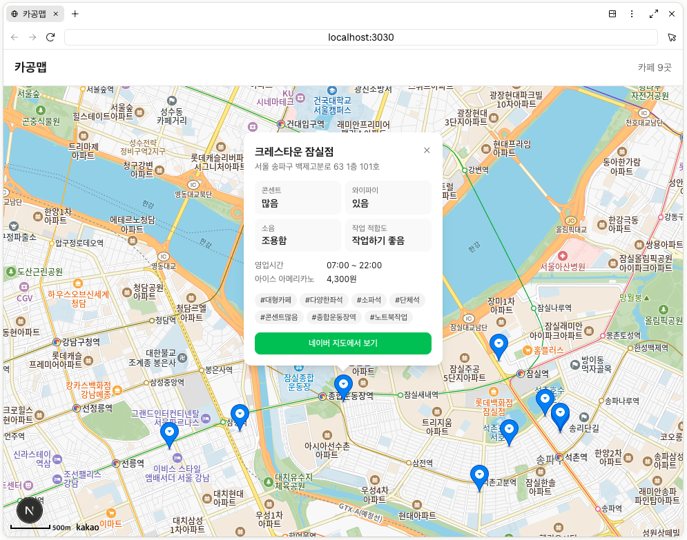

프로젝트 시작하기
지도는 어떻게 그려질까 — 카카오맵 SDK 원리
Scaffolding으로 띄운 첫 지도 화면이 어떤 원리로 이렇게 보이는지, 타일·SDK·마커로 나눠 뜯어봅니다.
얻어갈 것
앞에서 Scaffolding으로 띄운 첫 지도 화면이 어떤 원리로 이렇게 보이는지 뜯어봅니다. ‘지도가 그냥 뜬다’가 아니라 브라우저·카카오 서버·우리 데이터가 어떻게 맞물리는지 이해하면, 이후 기능을 붙일 때 어디에 손대야 할지 감이 잡힙니다.
결과부터 보기
아래는 개발 서버(http://localhost:3030)에서 확인한 첫 화면입니다. 지도 위에 느좋카페들이 핀으로 찍히고, 핀을 누르면 상세 카드가 열립니다.

1. 지도 그림은 어디서 올까 — 지도 타일
지도는 하나의 큰 이미지가 아니라, 작은 정사각형 이미지 조각(타일) 여러 장을 격자로 이어 붙인 것입니다. 화면을 움직이거나 확대하면 그 위치·배율에 맞는 타일을 카카오 지도 서버에서 그때그때 받아 와 깔아 줍니다.
- 그래서 지도 데이터를 우리가 가지고 있을 필요가 없습니다 — 카카오가 제공합니다.
- 인터넷이 끊기면 아직 받지 못한 영역은 비어 보입니다.
2. 브라우저는 어떻게 지도를 불러오나 — JavaScript 키와 SDK
우리 페이지는 카카오가 제공하는 JavaScript SDK(지도를 그리는 코드 묶음)를 불러옵니다. 이때 .env.local에 넣어 둔 JavaScript 키로 ‘이 사이트가 지도를 쓸 권한이 있다’는 것을 확인받습니다.
- 키가 없거나 도메인(
localhost:3030)이 등록돼 있지 않으면 지도가 뜨지 않습니다. - SDK가 로드되면 지도를 그릴 빈
<div>자리에 지도 객체를 만들어 끼워 넣습니다.
3. 우리 데이터는 어떻게 핀이 되나 — 좌표 → 마커
data/cafes.json의 카페 한 곳에는 lat(위도)·lng(경도)가 들어 있습니다. 코드는 이 좌표 하나하나를 마커(Marker)로 만들어 지도 위에 얹습니다.
// 개념 흐름 (의사코드)
cafes.forEach(cafe => {
const marker = new kakao.maps.Marker({
position: new kakao.maps.LatLng(cafe.lat, cafe.lng)
});
marker.setMap(map); // 지도 위에 핀으로 표시
});즉, 지도(카카오 제공) 위에 우리 데이터로 만든 마커(우리 제공)를 겹쳐 올리는 구조입니다.
4. 핀을 누르면 상세 카드가 열리는 이유
각 마커에 ‘클릭되면 이 카페의 정보를 보여줘’라는 동작을 연결해 둡니다. 클릭하면 그 카페의 영업시간·콘센트·와이파이 같은 cafes.json 값이 상세 카드로 나타납니다.
정리
- 지도 배경 = 카카오 서버의 타일 이미지
- 지도를 불러오는 권한 = JavaScript 키(.env.local) + 등록 도메인
- 핀 = 우리
cafes.json의 좌표로 만든 마커 - 상세 카드 = 마커 클릭 → 해당 카페 데이터 표시
‘카카오가 그려 주는 지도’ 위에 ‘우리 데이터로 만든 마커’를 얹는다 — 이 그림만 잡고 있으면, 다음에 필터·북마크 같은 기능을 붙일 때도 어디에 손대야 할지 금방 보입니다.